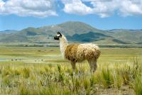
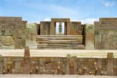
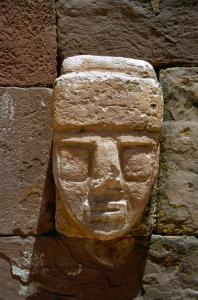
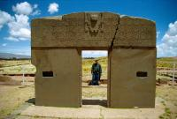
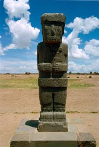
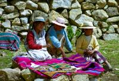

|
Mercredi 10 octobre
C'est peut-être un hasard, mais quand même... depuis que Jéjé est là, ça n'arrête
pas... encore une journée culturelle. On part ce matin pour Tiahuanaco, un ensemble
de ruines, restes de l'ancienne capitale de la civilisation des Tiwanacus, qui,
entre 900 et 1200 après JC, vivaient autour du lac Titicaca. Les indiens actuels
Aymaras en sont les descendants. A l'époque, ils maîtrisaient le traitement
des métaux, les math, l'astromomie, et connaissaient des techniques agricoles
simples mais très efficaces. Mais ce n'était pas un peuple guerrier et ils ont
étaient "absorbés" par la civilisation des Incas, dont les descendants sont
l'autre groupe d'indiens qui vit en Bolivie actuellement, les Quechuas. Tout
cela, on l'a appris en discutant hier avec Marcelo. Il nous a montré également
de drôles de pommes de terre. Toutes petites, sèches et légères. Il s'agit de
pommes de terre qui ont été déshydratées grâce un processus très ancien. Ainsi,
elles deviennent très faciles à transporter et se conservent jusqu'à 30 ans!!!
Pour les manger, il faut les faire tremper dans l'aue 2 ou 3 jours. Il paraît
que le goût, différent de celui des pommes de terre, est très bon. On n'a pas
goûté.
En début d'après midi, on rentre sur La Paz et on repart de suite sur Copacabana.
Pas celle de la chanson -qui se trouve au Brésil- mais celle au bord du lac
Titicaca, qu'on avait dejà visité depuis le Pérou il y a quelques années. Il
est toujours aussi grand, aussi bleu et aussi haut. Le plus grand lac du monde
au dessus de 2000 mètres d'altitude.
Jeudi 11 octobre
Il est 8H45. Le bateau pour l'île du Soleil vient de quitter le petit port
de Copacabana et navigue sur le lac Titicaca. Nous, on est toujours sur la terre
ferme, on a raté le bateau à quelques minutes. Pourtant, on sait bien qu'il
faut vérifier ce que nous racontent les gens ici. Mais hier soir, il avait l'air
tellement sûr de lui, le proprio de l'hôtel quand il m'a affirmé que les bateaux,
il y en avait toutes les heures à partir de 8H00. En fait, le prochain est à
13H30... Heureusement, on arrive à trouver un peu de place sur un bateau qui
a été réservé par un groupe de boliviens. On pense que la traversée va durer
une demi-heure. On arrive à 10H45, une bonne heure et demie après. C'est Jéjé
qui doit être frustré. Les bateaux de retour sont à 11H00 et à 16H30. Mais ce
dernier est trop tard pour lui, il doit reprendre un bus -déjà- pour La Paz
où on l'attend pour dîner...
Nous, on flâne. Mais avant ça, un peu d'efforts. Il faut monter les nmbreuses
marches qui mènent au sommet de l'île. Et quel sommet! On arrive à un peitt
village. La première impression de l'île n'est pas terrible. Le village n'est
pas joli. Beaucoup de restos et d'hôtels, fermés en plus (ce n'est pas la haute
saison), des maisons construites un peu à la va vite avec des toits en tôle,
et surtout, des femmes et des gamons tout le long du chemin qui ne semblent
intéressés que pour nous vendre des trucs et demandent à être pris en photo
pour quelques bolivianos. MAis ça se calme en haut des marches. Le haut du village
est un peu plus authentique et surtout la vue y est splendide, plongeante sur
le lac avec comme arrière-plan des montagnes enneigées. Et puis, on s'arrête
à un petit resto tenu par une dame charmante. Une seule table, une vue magnifique
et une truite délicieuse sortie tout droit du lac.
Le soir, on retourne à Copacabana. La ville est paisible et comme toute ville
touristique quise respecte, les restos y sont nombreux. On craque une nouvelle
fois pour une truite, saumonée celle-là, au coin d'une petite cheminée. Il est
vrai que dehors, ilne fait pas très chaud. Normal, on est à quelque chose comme
4000 mètres d'altitude, bien que le lac nous laisse parfois croire que nous
sommes en bord de mer.
Vendredi 12 octobre
Cematin, on repart pour La Paz. Le bus est à 11H30. Mais avant ça, on traîne
près de la cathédrale. Elle est amusante avec sont toit recouvert de carreaux
de faïence. Mais si on est là, c'est surtout pour assister à une cérémonie un
peu particulière. Tous els jours a lieu devant la cathédrale le baptême... des
voitures. Aujourd'hui, il y a 2 minibus décorés avec des fleurs et une petite
voiture qui ressemble à un sapine de Noël. Des guirlandes en papier un peu partout,
et sur le capot, un tas de petits objets. Des images saintes, des médailles,
une grosse liasse de faux dollars et une petite valise de 10 cm contenant diverses
petites choses. Le baptême est prévu à 10H00 et il est 10h30. Le curé est en
retard et le propriétaire, sans doute aussi nerveux que s'il devait faire baptiser
son enfant, tourne autour de sa voiture en l'attendant.
Ca y est, le curé arrive enfin. Un vieux monsieur semblant plutôt allemand
qu'indien ou espagnol, très grand arrive en marchant lentement avec sa cane
en bois. La cérémonie commence. Une petite prière, tout le monde fait le signe
de croix et le curé commence a arroser abondamment la voiture d'eau bénite.
Ca semble l'amuser beaucoup et, sur sa lancée, il arrose tout aussi abondamment
la famille regroupée autour de la voiture. Il en profite aussi pour leur taper
un peu sur la tête! Les gens se marrent et doivent essuyer l'eau bénite qui
coule à grosses gouttes. Mais ça y est, la voiture est baptisée. La grand-mère
ouvre un bouteille de mousseux, commence à arroser elle aussi la voiture, en
profite pour boire une grosses gorgée et finit sa bénédiction. Les pétards explosent...
Nous, on est contents, on comprend pourquoi les boliviens roulent comme des
fous et n'attachent pas leur ceinture... Dieu les protège.
Le soir, après 3 ou 4 heures de bus et un passage sur le bac qui relie la route
de Copacabana au reste de la Bolivie, on se retrouve de nouveau à La Paz, dans
le même hôtel, mais dans un dortoir occupé par deux filles. Il n'y a plus d'autre
chambre.
Samedi 13 octobre
Les 2 filles dans notre chambre sont rentrées tard hier soir. Elles sont suisses
francophones et étaient parties en VTT sur la route de fou qui mène à Coroico.
Mais elles ont dû faire marche arrière. C'est qu'avant-hier, il a beaucoup plu.
Il a même neigé sur l'alto, on a raté ça, c'est Emilio, un des deux gars qui
s'occuppe de l'hôtel qui nous l'a raconté. C'est vrai qu'hier, en arrivant sur
La Paz, on a vu de l'eau et de la boue un peu partout sur les hauteurs de la
ville. C'était la neige en train de fondre. Et bien, pour en revenir aux deux
suissesses, ces précipitations ont provoqué un glissement de terrain qui a rendu
impraticable la route déjà bien peu praticable qui mène à Coroico.
Aujourd'hui, on se prend un peu de repos. En fait, on passe quand même pas
mal de temps sur internet et on envoie toutes les photos qu'on a développées
au fure et à mesure. Trois kilos de photos qu'on se trimballe depuis l'Argentine.
Nos sacs vont être plus légers. Surtout qu'on s'est déjà débarrassé de certains
guides qu'on a donné à Jéjé ainsi que nos sacs de couchage. Après la Bolivie,
on va au Brésil, eu Mexique et au Costa Rica. Je doute qu'on ait froid.
Suite du voyage : Cochabamba
|

Bolivie
Tiwanaku
|

Bolivie
Tiwanaku
|
Bolivie
Tiwanaku
|

Bolivie
Tiwanaku
|

Bolivie
Tiwanaku
|

Bolivie
Tiwanaku
|

Bolivie
Isla Del Sol
|
|
|